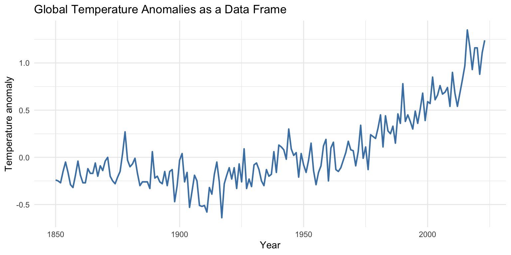
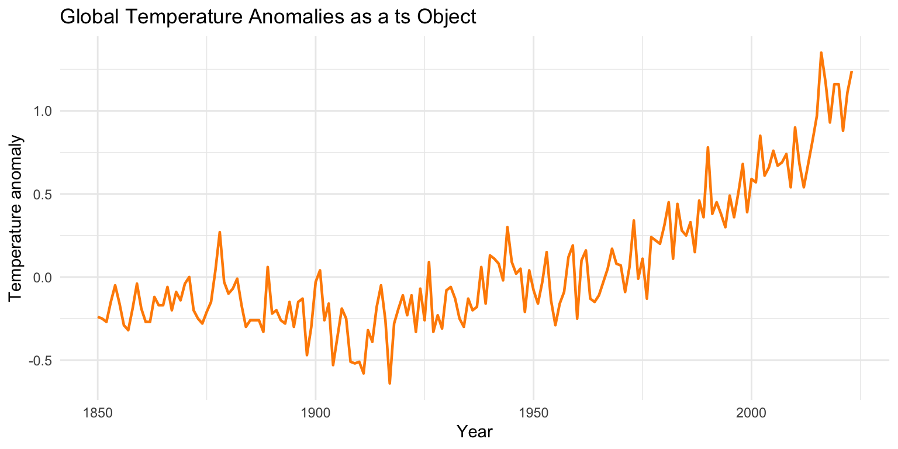

A short presentation of the main main ways in which time series can be represented in R, with a practical approach: the same underlying time series data can be stored as a plain vector, a data frame, a classical ts object, a zoo/xts indexed object, or a tsibble. Additionally real work often requires importing data from files or packages and converting between various formats.
For an easier comparison, we’re using the global temperature anomaly datasets: gtemp_both_ts, gtemp_land_ts, and gtemp_ocean_ts from the timeSeriesDataSets package.
Note
This chapter is organized by representational task rather than by package. Each recipe uses a tabset so the reader can compare alternative approaches side by side.
Code
library(ggplot2)library(ggfortify)library(zoo)library(xts)library(tsibble)library(tsbox)library(dplyr)library(tibble)library(tidyr)library(timeSeriesDataSets)# Running example datasets# gtemp_both_ts : global land + ocean temperature # gtemp_land_ts : global land temperature # gtemp_ocean_ts : global ocean temperature ## additional datasets are available in R (`datasets` package)
3.2 Time Series From an R Package
One of the simplest import path: load a time series object directly from an installed package (timeSeriesDataSets).
Time Series:
Start = 1850
End = 1855
Frequency = 1
[1] -0.12 -0.08 -0.14 0.04 0.04 0.00
# use data() to load `dataset_name` -- this does not exist!data(dataset_name, package ="timeSeriesDataSets") # simple class information, should return `ts`class(dataset_name) # Time of first observation (e.g., year) for a time-seriesstart(dataset_name) # Time of last observation (e.g., year) for a time-seriesend(dataset_name) # Last recorded index (year)# The number of samples per unit time frequency(dataset_name) # Also check `time`, `cycle`, `deltat`#First recorded data; Use `tail` for last recorded datahead(dataset_name)
ImportantNotice
All three datasets are already ts objects;
The datasets from timeSeriesDataSets are immediately ready for time-series-aware plotting and modeling;
Using package-provided datasets, as they are convenient for teaching.
3.3 From Plain Data …
Start from existing datasets, reconstruct it from more primitive forms.
ggplot(gtemp_df, aes(x = year, y = anomaly)) +geom_line(color ="steelblue", linewidth =0.8) +labs(title ="Global Temperature Anomalies as a Data Frame",x ="Year",y ="Temperature anomaly" ) +theme_minimal()

Figure 3.1: Global temperature anomalies represented as a plain data frame and plotted with ggplot2. Time is stored explicitly in the year column rather than in a specialized time-series object.
NoteComment
These options illustrate the baseline representations that are easiest to inspect, reshape, and export. The trade-off is that temporal semantics are not enforced automatically. If unsure, consider the tsbox library.
With tsbox, you have some handy conversions, from/to any format (supported by the package). Just check if your results are the same, for the various options.
# A tsibble: 174 x 2 [1D]
time value
<date> <dbl>
1 1850-01-01 -0.24
2 1851-01-01 -0.25
3 1852-01-01 -0.27
4 1853-01-01 -0.15
5 1854-01-01 -0.05
6 1855-01-01 -0.16
7 1856-01-01 -0.29
8 1857-01-01 -0.32
9 1858-01-01 -0.19
10 1859-01-01 -0.04
# ℹ 164 more rows
Code
# Use ggfortify method via ggplot2::autoplot# This is more Quarto-safe than relying on a plain autoplot() call.ggplot2::autoplot( gtemp_ts,ts.colour ="darkorange",ts.size =0.8,main ="Global Temperature Anomalies as a ts Object",xlab ="Year",ylab ="Temperature anomaly") +theme_minimal()

Figure 3.2: The gtemp_both_ts series plotted as a classical ts object. In this case, the temporal structure is embedded directly in the object and handled automatically by time-series-aware plotting methods.
TipExercise
Check the various conversion formats supported by tsbox and repeat previous transformations. Try to plot the auto-generated outputs (check if plot, ggplot, or autoplot is available for your dataset)
ImportantNotice
We can view the major representational philosophies for time series:
ts: classical approach (and compact);
xts (also, zoo): indexed and especially useful when time stamp matter;
tsibble: tidy and explicit, well suited to modern pipelines.
tsbox: quick and dirty, when you’re happy with automatic conversions.
3.6 Recipe 4: Import Time Series Data from Different File Types
In practice, data rarely start as ready-made R time series objects. This recipe shows several common entry points using the same temperature example.
# Simulate a CSV import using the running examplecsv_path <-tempfile(fileext =".csv")write.csv(gtemp_df, csv_path, row.names =FALSE)gtemp_from_csv <-read.csv(csv_path)head(gtemp_from_csv)
These conversions make the difference between tabular storage and time-aware analysis explicit. The same imported values can support very different workflows depending on how they are encoded after import.
3.8 Recipe 6: Represent Multiple Measurements at Each Time Point
The global temperature datasets also allow a natural comparison between univariate and multiple-series representations.
# A tsibble: 522 x 3 [1Y]
# Key: series [3]
year series anomaly
<dbl> <chr> <dbl>
1 1850 land -0.5
2 1851 land -0.6
3 1852 land -0.5
4 1853 land -0.5
5 1854 land -0.2
6 1855 land -0.5
7 1856 land -0.8
8 1857 land -0.4
9 1858 land -0.4
10 1859 land -0.1
# ℹ 512 more rows
Code
ggplot(gtemp_multi_tsibble, aes(x = year, y = anomaly, color = series)) +geom_line(linewidth =0.8) +labs(title ="Global Temperature Anomaly Series",x ="Year",y ="Temperature anomaly",color ="Series" ) +theme_minimal()
Figure 3.3: Three related temperature anomaly series represented together: combined land-and-ocean, land-only, and ocean-only. This illustrates a case where each time point carries multiple measurements rather than a single scalar value.
This recipe is useful for distinguishing:
multivariate storage (mts, wide xts),
multiple-series tidy storage (keyed tsibble), and
a simple wide tabular representation intended for interoperability.
3.9 Recipe 7: Convert Between Representations
Time-series analysis in R often requires jumping between frameworks.
The main lesson is that conversion is often unavoidable when combining packages. A representation is therefore not only a storage choice, but also a gateway to a particular computational ecosystem.
3.10 Recipe 8: Choose a Representation for a Task
This final recipe synthesizes the chapter and turns the comparison into a practical decision guide.
the original files are not yet in a time-series structure;
conversion between formats is part of the workflow.
A useful decision sequence is:
Where does the data come from?
Is the index regular or irregular?
Are there one or many series?
Which ecosystem will be used next: base R, indexed objects, or tidy forecasting tools?
3.11 Summary
This chapter compared multiple ways of representing time series in R while keeping the same global temperature example throughout. The use of tabsets makes the alternatives easier to compare side by side: direct package datasets, plain vectors and data frames, classical ts objects, zoo/xts, tidy tsibbles, and tsbox conversions.
The chapter also emphasized an important practical point: representation choices begin at import time. Reading data from CSV, RDS, text, or Excel is only the first step; the crucial second step is converting the imported values into a structure that supports the plotting, analysis, and modeling workflow that follows.